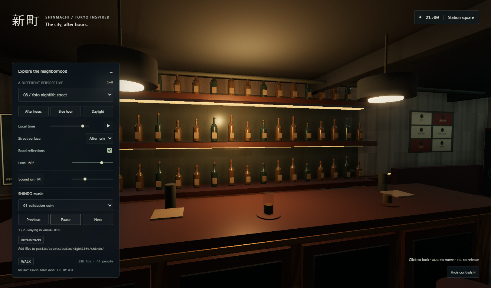

深度 / SHINDO · basement music bar
Actual WebGL captures, seed 8412, 21:00, after-rain surface and reflections. The three comparisons retain identical camera transforms, lenses and simulation timestamps. Click any image for full resolution.
Entrance, descent and room: before / after
Inside the expanded venue
Local music player in the running game

Real local-file playback test. Temporary validation copies of the already credited sample tracks were removed after testing; an empty folder uses the bundled sample.
Put your music in the Shindo track folder. Open SHINDO music in the game controls for track selection, Previous, Play/Pause, Next and Refresh tracks.
Short implementation and validation notes · Open the game